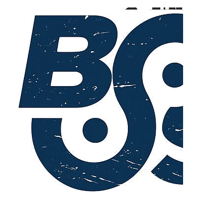

Comunidad primero
Creemos en construir relaciones, no solo audiencias. El pasillo importa tanto como el escenario.

BSIDESSobre Besides Madrid
Besides Madrid nace para crear un punto de encuentro abierto, cercano y sin postureo, dentro del movimiento internacional BSides. Aquí caben quienes llevan años rompiendo sistemas y quienes acaban de abrir su primera terminal.
Lo que nos mueve
Creemos en construir relaciones, no solo audiencias. El pasillo importa tanto como el escenario.
Entradas asequibles o gratuitas siempre que sea posible. La seguridad se aprende compartiendo.
Charlas técnicas y honestas, hechas para aprender de verdad, no para vender humo.
Sin ánimo de lucro, gestionada por voluntarios de la comunidad para la comunidad.
Parte de algo más grande
BSides es un movimiento global de conferencias de seguridad organizadas por comunidades locales, nacido para dar espacio a las voces que no siempre caben en las grandes conferencias. Madrid se suma ahora a ciudades como Barcelona, Londres o Las Vegas.
¿Quieres formar parte?
Envía una charla, apoya el evento como sponsor o únete al equipo organizador.